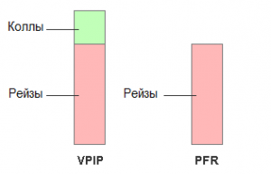
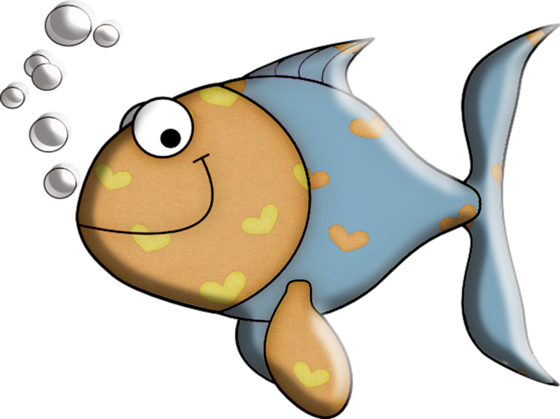
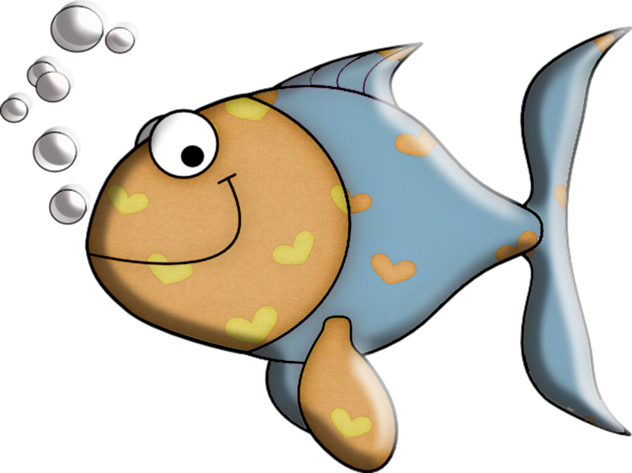

- а) 3-bet 2%, колл 6%
- b) 3-bet 10%, колл 6%
Зададим предполагаемые спектры колла и 3-бета игроков
Игрок а: 8%
3-бет: KK+, AKs, AKo
колл: QQ-55, AQs-ATs, KJs+, AQo эквити- 65%
Игрок б: 16%
3-бет: 77+, ATs+, KTs+, QTs+, JTs, AJo+, KQo
колл: 66-22, A9s, A5s-A2s, K9s, Q9s, J9s, T9s, 98s, 87s, 76s, 65s эквити- 35%
Из пердставленных спектров можно видеть, что спектр колла игрока а сильнее.
Ответ: а)
Agg - Aggression factor- значение, показывающее отношение количества ставок
и
рейзов
игрока к количеству его
коллов. При этом количество фолдов и чеков не учитывается.
AF = (количество бетов + количество рейзов)/*(количество коллов). Таким образом стат показывает возможность
игрока к проявлению агрессии.
Agg Frq % - Aggression frequency- значение, показывающее общий уровень
агрессии. Это
соотношение количества
ставок и рейзов игрока к количеству его ставок, рейзов, коллов и фолдов
AF = (количество рейзов + количество бетов)/*(количество рейзов+ количество бетов+количество
коллов+количество
фолдов).
Оба этих стата важны и их нужно использовать в совокупности.
4-bet % - это показатель того, сколько раз оппонент отвечает 4 бетом на 3
бет,
т.е. если на
100 рук на 4
чьих-то 3 бета опп 1 раз ответил 4 бетом, то его 4 бет будет 25%.
4-bet range % - это процент рук с которыми оппонент играет 4 бет. OpenRaise
*
4-Bet = 4-Bet
Range.

VPIP (Voluntarily put money into the pot – добровольное вложение денег в
банк)
– это
коэффициент, отражающий
частоту добровольного входа игрока в торги на префлопе. Большой и малый блайнд при этом не учитываются.
PFR(Pre-Flop Raise) - показывает процент случаев, когда игрок сделал рейз на
префлопе.PFR
всегда будет меньше
(или равен) значению их VPIP. VPIP включает в себя все префлоп рейзы (PFR) совместно с любыми совершёнными
коллами на префлопе.
Таким образом, разницу в процентах между VPIP и PFR определяют коллы на префлопе.
WTSD(went to showdown) - показывает как часто игрок доходит до вскрытия
карт.
wtsd- 25
можно считать средним.
Чем больше он, тем чаще вас проколят до шоудауна.
W$SD(won at showdown) — показывает как часто опп дойдя до вскрытия выиграл
банк. 51 -
средний показатель.
W$WSF(win when saw flop) - показывает как часто игрок выигрывает пот, после
того как увидел
флоп.43-45%
средний
показатель.
Agg + AggFrq
 
